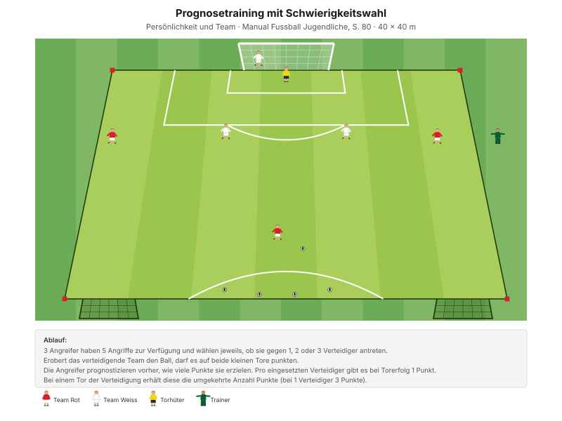
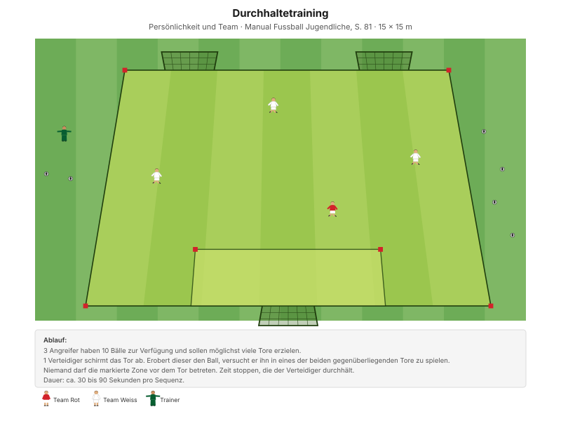

Jeder Spieler kann etwas besonders gut. Heute soll jeder das einmal zeigen – und es am Schluss auch gesagt bekommen.
"Die Spieler nimmt mutig Herausforderungen an und handelt entschlossen." Erkennungsmerkmal mentale Stärke, Manual Fussball Jugendliche, S. 80
Das Wichtigste kommt zum Schluss: In der Stärken-Runde nennt der Trainer für jeden Spieler eine Stärke, die er heute gesehen hat. Kurz, konkret, ehrlich. Das ist der Grund, warum dieses Training stattfindet.
| Zeit | Min | Teil | Inhalt |
|---|---|---|---|
| 0–4 | 4 | Besammlung | Thema ansagen: "Heute zeigt jeder, was er kann" |
| 4–16 | 12 | E1 | Doppelpass und Dribbling · Big 4 zwischen den Wiederholungen |
| 16–22 | 6 | E2 | 4 gegen 4 ins Feld dribbeln |
| 22–30 | 8 | E3 | Laufduell mit Richtungswechseln (Explosivität) |
| 30–45 | 15 | H1 | Prognosetraining mit Schwierigkeitswahl |
| 45–48 | 3 | Pause | Trinken, Umbau |
| 48–70 | 22 | H2 | Durchhaltetraining |
| 70–82 | 12 | Abschluss | Freies Spiel mit Positionswechsel |
| 82–90 | 8 | Ausklang | Stärken-Runde, Verabschiedung |
| Total | 90 |
Einstieg 26 · Hauptteil 37 · Abschluss 20 Min. – nach dem Trainingsschema des Manuals (S. 43).
Nur einmal umbauen: Das Feld des Einstiegs mit Innenbereich und Aussenzone wird in der Pause zum Spielfeld für H1 und H2.
Eigene Skizze · Platzaufteilung
Nur einmal aufbauen – das Einstiegsfeld liegt im späteren Spielfeld.
12 Minuten · inneres Feld 26 × 18 m · alle 12 Spieler
Eigene Skizze · Doppelpass und Dribbling
3 Wiederholungen à 1'30''–2' – zwischen den Wiederholungen je zwei Präventionsübungen.
"Finte mit Körpertäuschung – Rhythmuswechsel nach der Finte" SFV-Lernbaustein "Einstieg TE: Dribbling 02", Phase 1
Zum Beobachten: Wer probiert eine Finte, wer spielt nur den sicheren Pass? Beides ist eine Stärke – die eine heisst Mut, die andere Übersicht. Beide gehören am Schluss benannt.
Je zwei Übungen zwischen den Wiederholungen, 25 Sekunden pro Übung:
| Bereich | Übung | Worauf achten |
|---|---|---|
| Fussgelenk | Einbeinsprünge vorwärts | Bei der Landung knickt das Knie nicht ein, Oberkörper leicht nach vorne, Blick nach vorne. |
| Knie | Kniebeuge mit Spannung | Fersen auf dem Boden, Oberkörper gerade, Schultern nach hinten, Blick nach vorne. |
| Hüfte | World's Greatest Stretch | Schultern in einer Linie mit dem Arm, Position halten, hintere Fussspitze in den Boden drücken. |
| Hamstrings | Standwaage mit Partner | Keine Rotation bei den Schlägen auf den Ball zulassen – Position stabil halten. |
"Arbeit mit Zeitvorgaben – nicht mit Anzahl Wiederholungen." Prinzip Körperstabilität, Manual Fussball Jugendliche, S. 75
Zwei Punkte pro Übung nennen, nicht mehr. Qualität vor Tempo.
6 Minuten · gleiches Feld · 3 Wiederholungen à 1'30''–2'
Kein Umbau – dasselbe Feld mit Innenbereich und Aussenzone. Mit 12 Spielern rotiert eine Vierergruppe als Wechselteam nach jeder Wiederholung.
"Finte mit Körpertäuschung – Rhythmuswechsel nach der Finte" SFV-Lernbaustein "Einstieg TE: Dribbling 02", Phase 2
8 Minuten · 2 Bahnen · zwei Teams im Wettkampf
Manual-Vorlage · Diagramm 48 "Laufduell mit Richtungswechsel" (S. 74)

Optisches Startsignal verwenden – das zwingt zum Hinschauen statt Horchen.
| Parameter | Vorgabe |
|---|---|
| Distanz | 15–30 m |
| Wiederholungen | 3 |
| Pause zwischen Wiederholungen | 1/15 (Belastung × 15) |
| Serien | 3 |
| Pause zwischen Serien | 1'30''–2' |
"Erholungszeit: 10- bis 20-fache Dauer der Belastungszeit, abhängig von der Laufdistanz. Vollständig erholen zwischen den Wiederholungen." Prinzipien Explosivität, Manual Fussball Jugendliche, S. 72
15 Minuten · 40 × 30 m · Gruppen à 6
Manual-Vorlage · Diagramm 60 "Prognosetraining mit Schwierigkeitswahl" (S. 80)

Mit 12 Spielern zwei Gruppen à 6 – 3 Angreifer und bis zu 3 Verteidiger.
Die Spieler entscheiden selbst, wie schwer sie es haben wollen – und legen sich vorher fest. Damit wird sichtbar, wer sich überschätzt, wer sich unterschätzt und wer sein Können realistisch einordnet. Das ist eine Stärke, die sonst nie zur Sprache kommt.
"Vergleiche die Prognose der Angreifer mit den Ergebnissen. Achte dabei auf Risikobereitschaft, Mut, entschlossenes Handeln und Umgang mit Herausforderungen. Sprich Über- oder Unterschätzung an und lobe gewünschtes Verhalten." Umsetzungshinweise, Manual Fussball Jugendliche, S. 80
"Wie realistisch war die Prognose? Was habt ihr gefühlt? Was haben sie bewirkt? Wie seid ihr damit umgegangen?" Entwicklungsfragen, Manual Fussball Jugendliche, S. 80
22 Minuten · 15 × 15 m · 10 Bälle pro Durchgang
Manual-Vorlage · Diagramm 61 "Durchhaltetraining" (S. 81)

Zwei Felder parallel, damit alle 12 gleichzeitig beteiligt sind.
Dauer: ca. 30 bis 90 Sekunden pro Sequenz.
Alleine gegen drei – das ist nicht zu gewinnen, und das wissen alle. Umso deutlicher zeigt sich, wer trotzdem bis zum Schluss alles gibt. Das ist die Teamregel Gut Mitmachen in Reinform, und sie ist hier messbar.
"Wie hast du dich gefühlt? Hast du bis zum Schluss alles gegeben?" – "Lobe gewünschtes Verhalten individuell und unabhängig vom Erfolg." Entwicklungsfragen und Umsetzungshinweise, Manual Fussball Jugendliche, S. 81
Wichtig: Die gestoppte Zeit wird nicht zur Rangliste. Sie ist ein Gesprächsanlass, kein Wettkampf.
12 Minuten · 5 gegen 5 plus 2 Torhüter
Freies Spiel auf zwei Tore. Der Trainer gibt die Positionen vor – bewusst auch ungewohnte, basierend auf dem, was heute sichtbar wurde.
8 Minuten · Cool-down im Gehen, dann Kreis
Zuerst 3–4 Minuten lockeres Auslaufen, dann der Kreis. Das ist der wichtigste Teil des Trainings.
Vorbereiten: Während H1 und H2 mitschreiben. Zwölf Stärken fallen einem im Kreis nicht spontan ein.
Abschlusssatz: "Jeder von euch hat heute etwas gezeigt, das das Team besser macht. Nächstes Mal spielen wir richtig zusammen – dann kombinieren wir eure Stärken."
Material aufräumen.
| Teil | Vorlage | Seite |
|---|---|---|
| E1 – E3 | SFV-Lernbaustein "Einstieg TE: Dribbling 02", Phasen 1–3 | – |
| E3 | Integrierte Trainingsform "Laufduell mit Richtungswechsel" (Diagramm 48) | 74 |
| H1 | Selbstbewusstsein "Prognosetraining mit Schwierigkeitswahl" (Diagramm 60) | 80 |
| H2 | Engagement "Durchhaltetraining" (Diagramm 61) | 81 |
| Explosivität, Körperstabilität | Athletik und Gesundheit | 72, 75 |
| Trainingsaufbau | Trainingsschema (Abb. 19) | 43–45 |
Alle Seitenangaben beziehen sich auf das J+S Manual Fussball Jugendliche (BASPO/SFV, 2022). Spielerzahlen und Feldmasse sind auf einen Kader von 12 Spielern angepasst. Dieser Trainingsplan wurde mit Unterstützung von KI (Claude, Anthropic) erstellt. Das Stärken-Konzept orientiert sich zusätzlich am Kartenset Fördern (individuelle Stärken erkennen und benennen).